A Home Production Approach to Housing Location Choice and Travel Behaviour
REES Seminar May 15, 2026
Outline
- Ontology and Epistemology
- Home Production Theory
- Integrated Transportation & Land Use Models
- Research Gaps in Data & Models
- Data Synthesis
- Model Framework
- Empirical Results
- Current work
Ontology: What is a city?
- An agglomeration of economic production
- A collection of people interacting in space
Epistemology: How we model the city?
- Urban Economics: “Did highways cause suburbanization?” Quarterly Journal of Economics (Baum Snow, 2007)
- Research question typically set by researcher
- Careful causal identification on a single research question using reduced-form OLS
- Builds on economic theory such as Alonso, Muth, Mills (AMM) monocentric city model
- Transportation Engineering: “The Integrated Land Use, Transportation, Environment (ILUTE) Microsimulation Modelling System” Travel Behaviour Research (Miller & Salvini, 2002)
- Research question typically set by planning agency
- Microsimulation system of models to answer multiple questions
- Builds on diverse theory such as AMM (1960s-1970s), Lowry (1960s), and Hanson (1980s)
Ontology: The Simulated City
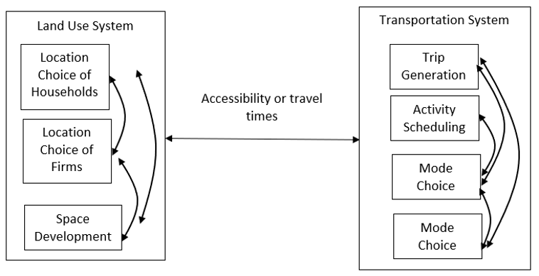
Integrated Land Use & Transport Model
Ontology: The Simulated Transportation System

Activity-Based Transportation Model
Home Production Theory
- “Eco-nomics” from Greek: Oikos (“household”) and Nemein (“management”)
- Begin from model of Becker (1965): households make tradeoffs between home production (time allocation) & market consumption (money allocation)
- Forms a consistent theoretical basis for integrating transportation, land use, & macroeconomic models
- Activity-based travel models have similar theoretical lineage (through value of travel time literature of DeSepera, Evans, & Jara-Diaz)
- How much time do I spend on activities in the home vs. out of the home?
- Do I want a large home with plenty of space for cooking or a small apartment close to a variety of restaurants?
Scheele’s Taxonomy of the Home
- Home as a project - constantly being rebuilt and changed
- Home as a base for daily life - a place for recreation and carrying out household routines
- Home as an archive of memories - an integral part of life story
- Home as a temporary station - activities mainly take place elsewhere
Hojrup’s Life-Mode
- Self-employed life-mode: work as a means of production and the home as central to it
- Wage-earner life-mode: work as a wage to maximize utility during leisure time
- Career life-mode: work as a means of progress and the home as a status symbol
Conctual Home Production Integration
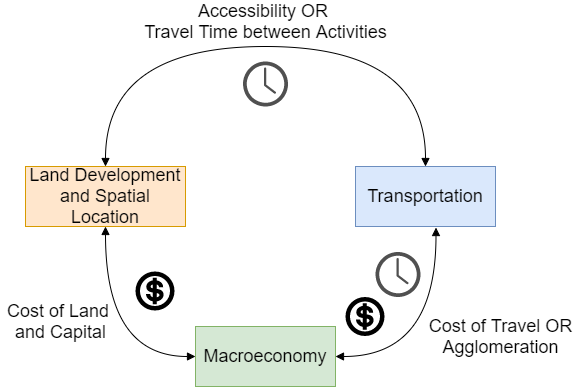
Integrated Land Use & Transport Framework
Research Gaps
Data Gaps
- Household travel surveys do not consider in-home activities
- Expensive and challenging to collect survey data with both time use and expenditure responses (we tried it)
- Data fusion methods are ad-hoc and poorly developed
Model Gaps
- Only able to consider single-person households
- Do not model non-working household members
- Arbitrary definition of consumption technology: minimum time required to consume a good or service
Data Synthesis 1: Overview
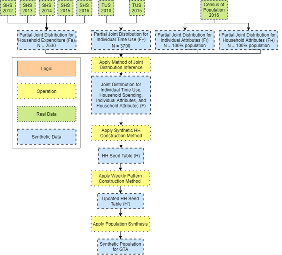
Data Synthesis 2: Joint Distribution Inference
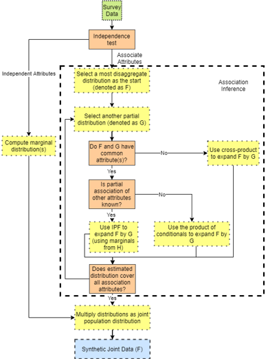
Data Synthesis 3: Household Seed Table
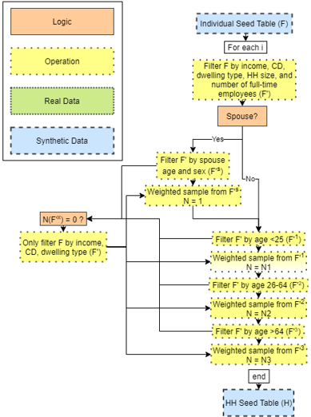
Data Synthesis 4: Household Time Use Table
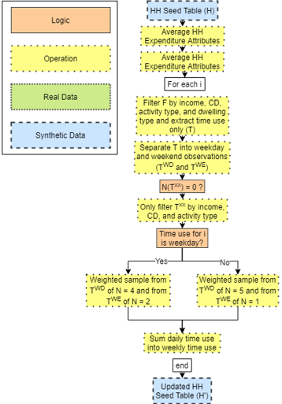
Data Synthesis 5: Synthetic Data Table
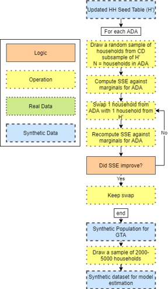
Data Synthesis 6: Internal Validation
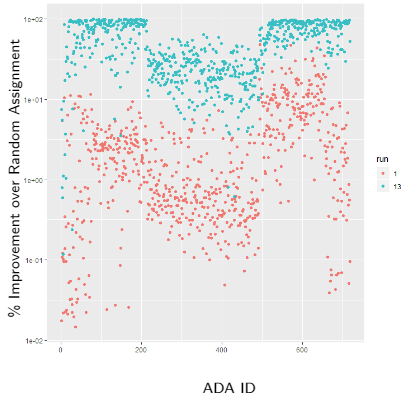
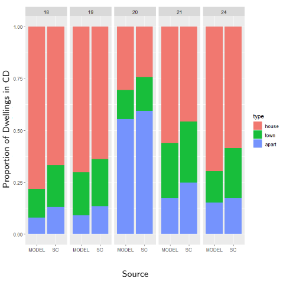
Data Synthesis 7: External Validation
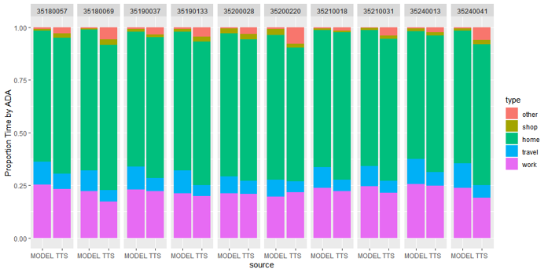
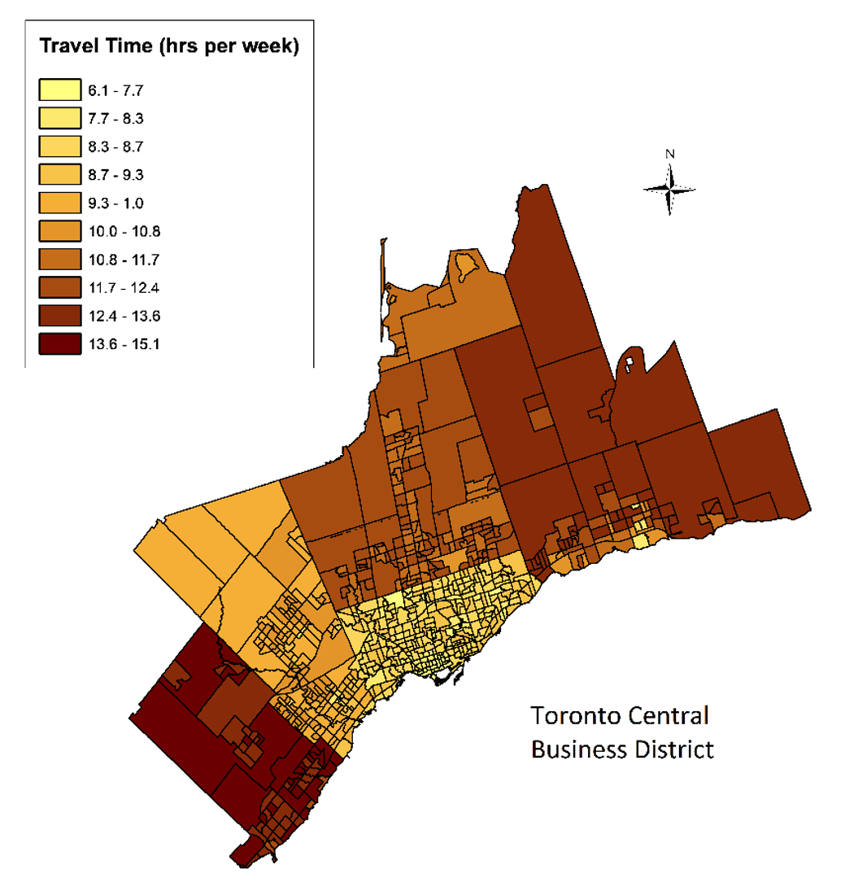
Conceptual Full Model Framework
Assume a multiple discrete-continuous extreme value (MDCEV) model with a generalized nested logit error structure \[F\left(\epsilon_{1}^*,(\epsilon_{12},...\epsilon_{1k}),(\epsilon_{l2},...\epsilon_{lK}),...(\epsilon_{L1},...\epsilon_{LK})\right) = \left[\exp\left(-\exp\left(\frac{-\epsilon_{1}^*}{\sigma}\right)\right)\right] \\ \prod_{l=1}^L \left[\exp -\left(\sum_{k=1}^K\exp\left(\frac{-\epsilon_{lk}}{\sigma \theta}\right)\right)^\theta \right]\]
Maximize the objective function \[\max(U_q(\boldsymbol{x}_{ql},\boldsymbol{t}_{ql},\boldsymbol{t}_{qlw})) = \sum_{l=1}^L\sum_{k=1}^K u_k(x_{qlk}) + \sum_{l=1}^L\sum_{n=1}^N\widetilde{u}_n(t_{qln}) + \sum_{l=1}^L\widetilde{u}_w(t_{qlw})\]
With the following baseline utility function \[ \begin{align} &\psi_{qkl} = exp(\boldsymbol{\beta}_q' z_{qlk} + \boldsymbol{\delta}_q' x_{ql} + \epsilon_{qlk}) \\ &\psi_{qnl} = exp(\boldsymbol{\widetilde{\beta}}_q' \widetilde{z}_{qln} + \boldsymbol{\widetilde{\delta}}_q' \widetilde{x}_{ql} + \widetilde{\epsilon}_{qln}) \\ &\psi_{qwl} = exp(\boldsymbol{\widetilde{\beta}}_q' \widetilde{z}_{qlw} + \boldsymbol{\widetilde{\delta}}_q' \widetilde{x}_{ql} + \widetilde{\epsilon}_{qlw}) \\ \end{align} \]
Empirical Home Production Model 1
- Assume a multiple discrete-continuous extreme value (MDCEV) model where utility is given by the following translated CES function (assuming \(\alpha_𝑘->0\) gives LES or a variant of the Stone-Geary expenditure function) \[U\left(\mathrm{x}\right)=\sum_{k=1}^{K}\gamma_k\psi_k\mathrm{ln}\left(\frac{x_k}{\gamma_k}+1\right)\]
- Maximize the objective function \[\mathrm{max}\left(U_q\left(\mathbf{x}_q,\mathbf{t}_q,\mathbf{t}_{qw}\right)\right)=\sum_{k=1}^{K}u_k\left(x_{qk}\right)+\sum_{n=1}^{N}{\widetilde{u}}_n\left(t_{nq}\right)+{\widetilde{u}}_w\left(t_{wq}\right)\]
- Subject to the constraints \[\sum_{k=1}^{K}p_{qk}x_{qk}=E_q+\omega_qt_{qw}\] \[\sum_{n=1}^{N}t_{qn}+t_{qw}=T_q\]
Empirical Home Production Model 2
Assume all members of a household are subject to a common monetary budget constraint & independent (for now) temporal budget constraints
Introduce a parallel constraint (model called PC-MDCEV) through a change in the specification of the GEV error structure to \[G\left(Y_{11},Y_{21},\ldots Y_{1k}\ldots Y_{1H}\ldots Y_{Hk}\right)=\sum_{b}^{B}\left[\prod_{h}^{H}\left(\sum_{k}^{K}Y_{hk}^{\lambda_b}\right)^{\theta_h^q}\right]^{1/\lambda_b}\]
\(\theta_ℎ^𝑞\) represents the contribution of individual q (household member h) to consumption by household H
\(\theta_ℎ^𝑞\) can be parameterized based on member characteristics and is identified off inter-household variations
Empirical Home Production Model 3
- Following much simplification, the joint likelihood function for an individual q is given by \[P_q=\left[c_{qw}\prod_{k=2}^{K}c_{qk}\sum_{k=1}^{M}\frac{1}{c_{qk}}\prod_{n=2}^{\widetilde{M}}c_{qn}\sum_{n=1}^{\widetilde{M}}\frac{1}{c_{qn}}\right]\left[\frac{{\widetilde{V}}_{qw}}{a-b}\mathrm{exp} \left({\widetilde{\mathbf{\beta}}}_q\prime{\widetilde{z}}_{qw}\right)\mathrm{exp} \left(-\frac{{\widetilde{V}}_{qw}}{a-b}\mathrm{exp} \left({\widetilde{\mathbf{\beta}}}_q\prime{\widetilde{z}}_{qw}\right)\right)\right]\\\prod_{k=1}^{M}\frac{exp\left({\theta_h^qW}_{qk}\right)}{\left(\sum_{k=1}^{K}exp\left({\theta_h^qW}_{qk}\right)\right)}\left(M-1\right)!\left[\frac{\prod_{\widetilde{M}=1}^{\widetilde{M}}\mathrm{exp}\left(W_{qn}\right)}{\sum_{n=1}^{N}\mathrm{exp}\left(W_{qn}\right)}\left(\widetilde{M}-1\right)!\right]\] where \(a=\frac{\omega_q}{x_{q1}^\ast-x_{q1}^0}\) and \(b=\frac{1}{t_{q1}^\ast-t_{q1}^0}\)
- We can then define \[P_H=\prod_{h}^{H}P_{hk}^{\theta_h^q}P_{hn}\] and parameterize contributions to the household function by individuals as \[\theta_h^q=\frac{\mathrm{exp} \left(\beta Z_h^q\right)}{\sum_{h}^{H}\mathrm{exp}\left(\beta Z_h^q\right)}\]
Some Notes on Budget Constraints
- Travel time has a negative marginal utility & does not fit with positive marginal utility assumption of MDCEV
- Travel time removed from total travel budget
- Model-based solutions now exist
- Time budget becomes endogenous as a function of the travel time necessary to move between activity locations (transportation model connection)
- Similarly, monetary budget becomes conditional upon the home purchase (daily vs. long-term expenditure connection)
PC-MDCEV Model Results
| Variable | Work | Home Prod | Shop | IH Food | OH Food | IH Ent | OH Ent | Social | Dwell | Edu |
|---|---|---|---|---|---|---|---|---|---|---|
| Time Allocation | Baseline Marginal Utility (\(\beta\)) | |||||||||
| ASC | - | 2.119 | -4.261 | 1.396 | -4.233 | -0.437 | -3.896 | 0.109 | - | -8.356 |
| Female | -0.76 | - | - | - | - | - | - | - | - | - |
| Age <25 | - | - | - | 0.357 | 0.433 | - | - | - | - | - |
| Age 25-34 | - | -0.587 | -0.291 | 0.435 | 0.502 | - | - | - | - | -0.647 |
| Age 35-44 | - | -0.253 | -0.201 | 0.451 | 0.465 | - | -0.099 | - | - | -2.187 |
| Age 45-54 | - | 0.286 | -0.370 | 0.501 | 0.531 | 0.214 | - | -0.116 | - | -2.764 |
| Age 55-64 | - | - | -0.421 | 0.656 | 0.560 | 0.457 | -0.494 | -0.395 | - | - |
| Age 65-74 | - | - | -0.348 | 0.618 | 0.528 | 0.473 | -0.186 | -0.512 | - | - |
| Work balance | -1.111 | - | - | - | - | - | - | - | - | - |
| HH size | -2.345 | -0.385 | - | - | - | - | - | - | - | - |
| Durham region | -0.582 | - | - | 0.217 | 0.506 | - | - | - | - | - |
| Satiation (\(\gamma\)) | - | 0.018 | 0.061 | 1.398 | 0.018 | 0.918 | 0.112 | 0.544 | 0.114 | 124.7 |
| Consumption | Baseline Marginal Utility (\(\beta\)) | |||||||||
| ASC | - | -1.917 | - | 2.486 | -0.285 | 2.842 | 0.936 | - | 5.551 | -2.337 |
| Married | - | 0.843 | - | 1.043 | 0.659 | 0.759 | 0.595 | - | 0.947 | 0.852 |
| Divorced/Sep | - | 0.714 | - | 1.082 | 0.730 | 0.844 | 0.612 | - | 1.027 | 1.046 |
| Apt Dwelling | - | - | - | 0.758 | - | 0.485 | 0.263 | - | 0.885 | - |
| Median Income | - | - | - | - | - | - | - | - | - | 0.029 |
| Satiation (\(\gamma\)) | - | 0.005 | - | 0.024 | 0.004 | 0.017 | 0.039 | - | 0.001 | 0.006 |
Findings
- Members of larger households tend to spend less time on home production
- Represents an opportunity to apply the economics of the firm to an interpretation of household behavior!
- Larger households, like larger firms, benefit from economies of scale
- Type & mix of dwellings (detached, townhouse, apartment, etc.) have significant influences on both time use and expenditure
- Both in-home and out-of-home food consumption time tends to increase with age – younger individuals are in a rush to finish their meals?
Current Work
- Sheppard (1980) critiques standard spatial choice theory
- Many spatial choices are rarely or never observed, so we specify utility a priori and test on cases where data available
- How much do choices say about preferences given structural constraints of capitalist system?
- Suburban locations by high income groups is explained by a relatively greater preference for open space has become standard in much of the neoclassical literature
- Implication is that the market allocates land efficiently to all people according to their relative preferences, and that the crowding of low-income groups onto higher priced inner-city land is similarly an outcome of their preferences
- Fundamentally, a choice set problem
Current Work
- 2-stage discrete choice experiment (DCE)
- Stage 1: select a neighbourhood based on images - process as latent variables in model
- Stage 2: select a dwelling conditional neighbourhood choice
- Track search process between neighbourhood & dwelling level
- Provide revealed preference default option
Current Work
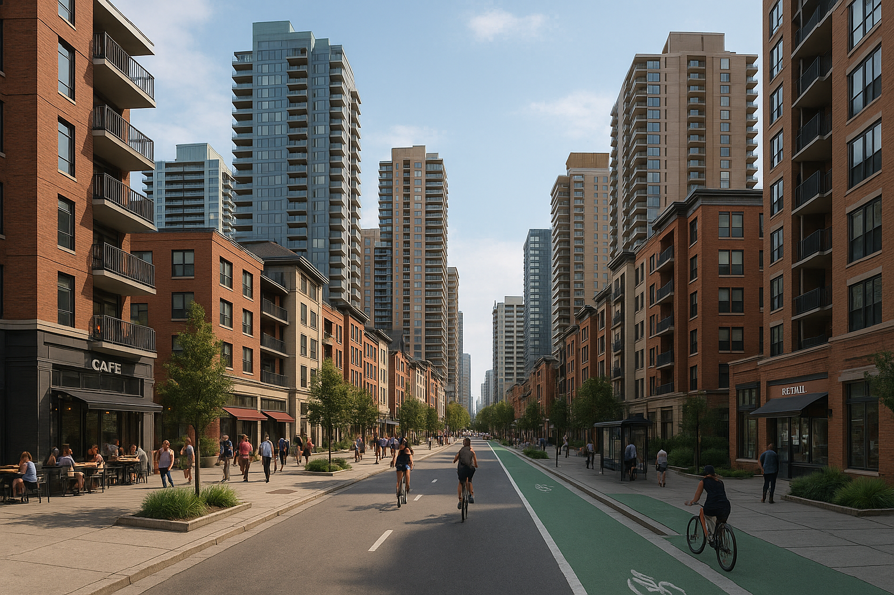